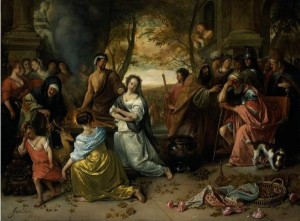
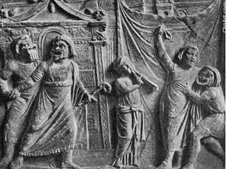
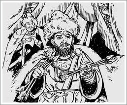
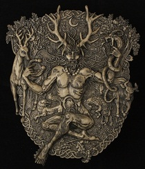
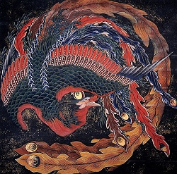

Mitoloji Nedir?
-
Mitoloji (Yunanca: “söylenen ya da duyulan söz” ve “konuşma”), kelimelerinin birleşiminden oluşmuş olup,
 - Eski Yunan'da “geçmişte söylenenlerin tekrar edilmesi” gibi bir anlam barındırmaktayken zamanla Batı dillerinde efsane anlamı kazanmıştır. Çağdaş kullanımda, mitoloji ya belirli bir din veya kültürdeki mitlerin bütününü tanımlar(örneğin: Kelt mitolojisi).Mit sözcüğü gerçekte doğru olmayan bir hikâye veya anlatı için tercih edilir ve çoğunlukla bir yanlışlık, doğru olmayan unsur vurgusu barındırır. Bununla birlikte bu tip bir mit kullanımı veya anlamı mitolojide kabul edilmez ve kullanılmaz
- Mitoloji kelimesinin Türkçe karşılığı söylenbilim veya söylencebilim idir.
- Mitoloji bir din veya bir halkın kültüründe tanrılar, kahramanlar, evren ve insanın yaratılışına dair tüm sözlü ve yazılı efsane birikiminin ve bu efsanelerin doğuşlarını, anlamlarını yorumlayıp, inceleyen ve sınıflandıran çalışmalar bütünüdür.
Özellikler
- Efsaneler konu itibarıyla tanrıları, kahramanları ve doğaüstü varlıkları konu alan anlatılardır. Uyumlu bir
sistem içerisinde düzenlenmişlerdir ve çoğunlukla geleneksel sözlü aktarı yoluyla (ozanlar, rahipler) şekilde yayılarak canlı kalırlar. Sıklıkla ilgili oldukları topluluğun dinî veya ruhânî yaşantıları ile bağıntılı olan mitler, rahipler veya hükümdarlar tarafından onaylanırlar. Topluluktaki bu ruhânî mevkilerini kaybettikleri zaman, yani topluluğun ruhânî yapısıyla aralarındaki bağ koptuğunda, mitolojik niteliklerini yitirir ve folklora ait söylenceler veya peri masalları haline gelirler.
- Bir mit gücünün bir kısmını topluluğun ona olan inancından ve doğru olarak kabul edilmesinden alır. Folklor , tüm kutsal geleneklerin birikimi vardır ve terimin kullanımında, günlük kullanımındakine benzer, herhangi bir kötüleme, aşağılama bulunmamaktadır. Örneğin bir dinin hem kendi mitolojisinden ve tekil olarak içerdiği mitlerden ayrı ayrı söz edilebilir. Bu durum tamamen bilimsel ve tarafsız bir yaklaşım olup, bahsedilen söylence ve kavramlara herhangi bir yaşanlama atfetmediği gibi kötüleme ve aşağılama amacı da barındırmaz.
- Efsaneler sık sık gerek evrenin gerekse yerel bölgenin ortaya çıkışını açıklama amacı taşır. Örneğin
sırasıyla yaratılış efsaneleri ve kuruluş efsaneleri gibi. Efsaneler ayrıca sık sık doğa olaylarının, başka şekilde açıklanamayan kültürel âdetlerin açıklanması amacını da taşır. Genel olarak efsanelerin doğal anlamda basit bir izah sunmayan herhangi bir şeyi açıklamak için sık sık kullanıldığı söylenebilir.

- Mitoloji terimi Yunan mitolojisi veya Roma mitolojisi formunda olduğu gibi sıklıkla eski kültürlerin antik hikâyelerine atfen kullanılmaktadır. Bazı efsaneler orijinal olarak sözel bir geleneğin ürünüyken zamanla yazınsal hâle de gelmiştirler. Çoğu efsanenin başlangıç noktası aynı iken değişik coğrafya ve kültürlerden etkilenerek farklılaşmış birden farklı anlatı haline dönüşmüş, orijinal olanı ancak mitologların anlayabileceği kadar kompleks hale gelmişlerdir.
- Mit kutsal bir öyküyü anlatır;en eski zamanda, "başlangıçtaki" masallara özgü zamanda olup bitmiş bir olayı anlatır.Mit her zaman bir "yaratılış"ın öyküsüdür: Bir şeyin nasıl yaratıldığını, nasıl varolmaya başladığını anlatır.
Sınıflandırma
- Ritüel mitleri belirli dinî uygulamaların yapılışını veya anlamını açıklayan mitlerdir. Tapınma, ibadet eylemi ile yakın bir ilişki içerisindeki bu mitler, dinî veya ruhâni sistemin liturjik yapısında yer alabilirler. Köken mitleri bir âdet, isim, nesne veya canlının kökenini açıklayan mitlerdir.Kült mitleri bir ilahın (veya ilâhî unsurlar taşıyan varlığın) gücünü gösteren kompleks kutlamaları açıklayan mitlerdir. Prestij mitleri genellikle ilâhî unsurlar veya kutsallık atfedilmiş belirli bir halk, kahraman veya şehirle ilgili mitlerdir. Eskatolojik mitler bilinen dünyanın sonunu getireceği öne sürülen bir mutlak sonu, ve/veya buna dair kavram ve olayları açıklayan, kısacası eskatolojik şeyleri konu alan, mitlerdir. Sosyal mitler ise o anki sosyal değer veya uygulamaları savunmak veya güçlendirmek amacı taşıyan mitlerdir. Bir mit birden çok kategoriye uyabilirse de konularına göre efsaneler kabaca 3 kategoride incelenebilirler.
1. Evren ve yaratılışa dair söylenceler
2. Tanrılara dair söylenceler
3. Kahramanlara dair söylenceler

Sözlükte "mitoloji"
1- Mitleri, doğuşlarını, anlamlarını yorumlayan, inceleyen bilim.
2- Bir ulusa, bir dine, özellikle yunan, latin uygarlığına ilişkin mitlerin,efsanelerin tümü.
1- Mitleri, doğuşlarını, anlamlarını yorumlayan, inceleyen bilim.
2- Bir ulusa, bir dine, özellikle yunan, latin uygarlığına ilişkin mitlerin,efsanelerin tümü.

Mitolojik hayvan resmi, (Ressam: Katsushika Hokusai)

En köklü mitolojilerden biri de Türk mitolojisidir. Türk mitolojisinde bozkurt önemli bir rol oynamaktadır.